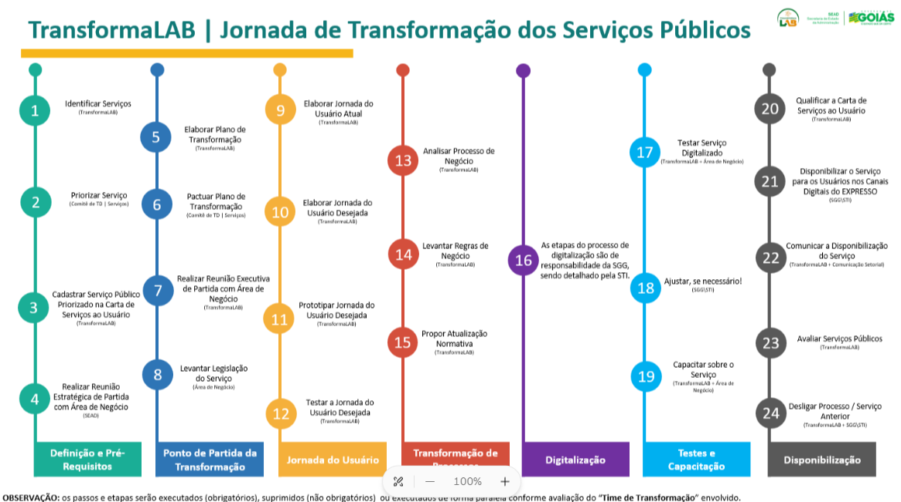
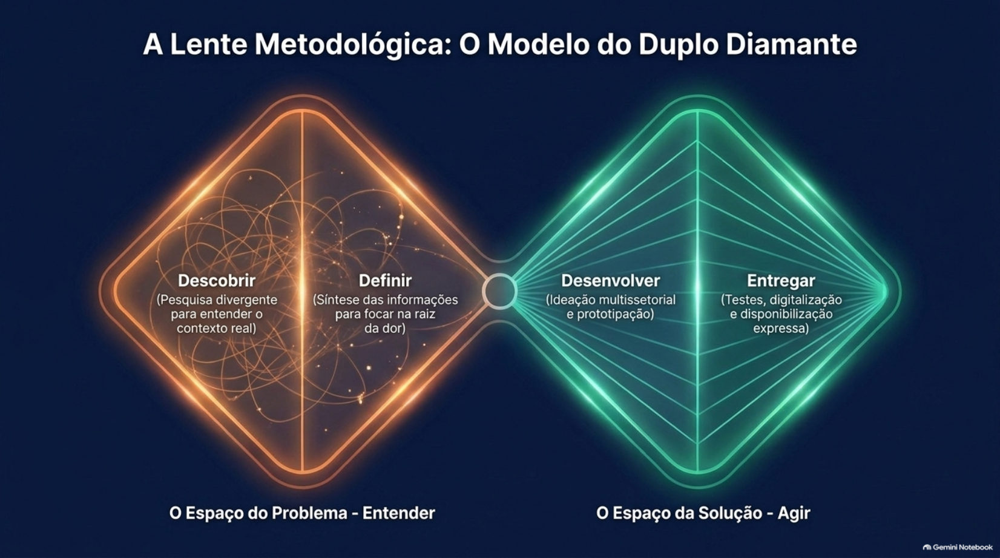
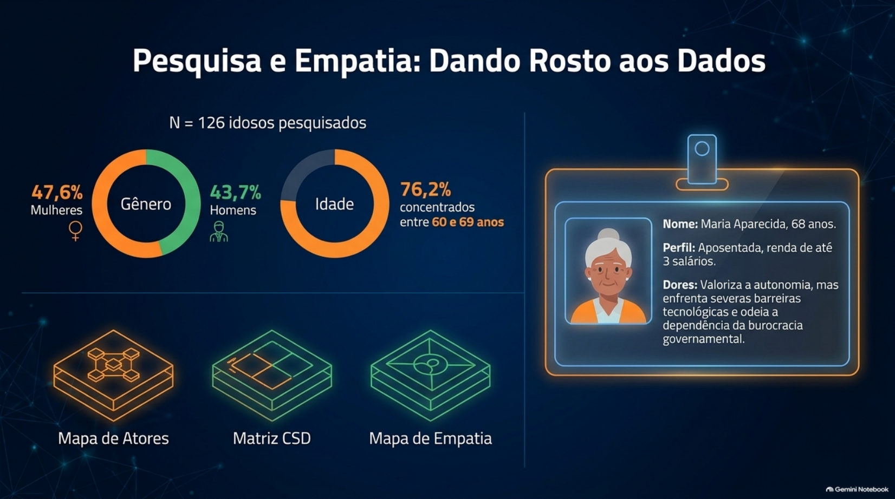
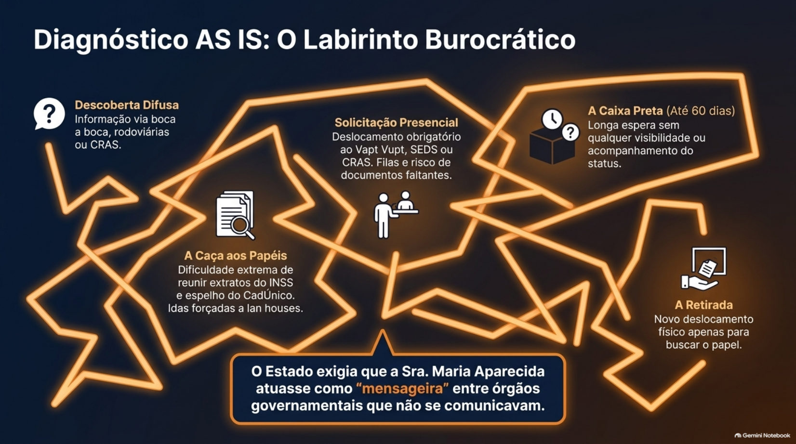
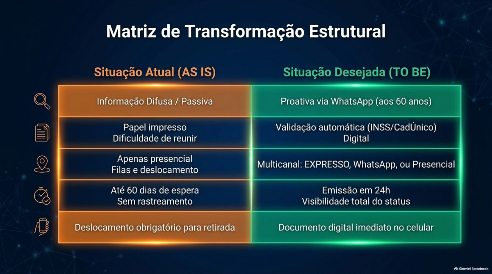
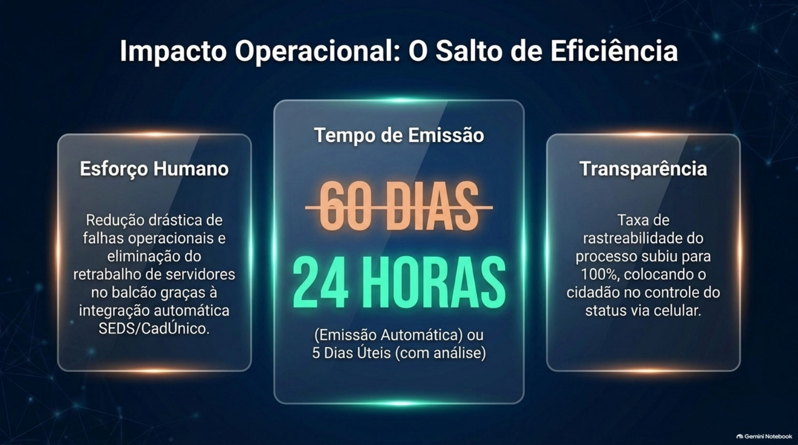

Do que trata o artigo
O estudo analisa como a Jornada de Transformação de Serviços Públicos, baseada em Design Thinking e Design de Serviços, foi aplicada ao redesenho do serviço de emissão do Passaporte da Pessoa Idosa em Goiás, com atenção a pessoas idosas de baixa literacia digital.
A leitura mostra que digitalizar não basta: o ganho de prazo veio junto com canais que respeitam níveis diferentes de letramento digital e com bases de dados que conversam entre si.
Pergunta e contribuições
Pergunta de pesquisa
De que modo a combinação de princípios de Design de Serviços, multicanalidade inclusiva e interoperabilidade de dados pode reduzir barreiras de acesso e melhorar a experiência de pessoas idosas no uso de serviços públicos digitais?
Três contribuições
- Um framework analítico que relaciona inclusão digital progressiva, design inclusivo e interoperabilidade governamental.
- Evidências empíricas da aplicação da Design Science Research em governo digital estadual no Brasil.
- Implicações para políticas públicas alinhadas aos ODS 10 (Redução das Desigualdades) e 16 (Paz, Justiça e Instituições Eficazes).
A Jornada de Transformação e o serviço em foco
Uma metodologia de Design Thinking e Design de Serviços aplicada a um benefício voltado a pessoas com 60 anos ou mais.

Metodologia desenvolvida pela Superintendência Central de Transformação Pública (SCTP) da Secretaria de Estado da Administração de Goiás (Sead), com apoio do TransformaLAB.
Ela combina Design Thinking e Design de Serviços e foi aplicada ao redesenho do serviço Emitir Passaporte da Pessoa Idosa. É esse percurso, e não uma tecnologia isolada, o artefato investigado no estudo.
Digitalizar processos não basta para gerar valor público quando o público-alvo enfrenta barreiras de letramento digital.
Instituído pela Lei estadual nº 14.765/2004, o passaporte garante gratuidade no transporte intermunicipal a pessoas com 60 anos ou mais, residentes em Goiás, com renda familiar mensal de até três salários mínimos.
A investigação ocorreu de 3 a 10 de junho de 2024, durante a Jornada de Transformação conduzida pelo TransformaLAB/Sead.
Um público com letramento digital heterogêneo é um bom teste: a tecnologia deve se adaptar ao humano, e não o inverso.
Do valor público ao Duplo Diamante
O referencial que sustenta o redesenho: transformação digital, design e inclusão.

A literatura associa a transformação digital no setor público a mudanças na cultura organizacional, nos modelos de operação e na relação entre Estado e cidadão, e a orienta pela geração de valor público.
Brito (2025) critica índices de governo digital que privilegiam métricas quantitativas, como o número de serviços digitalizados, em detrimento de inclusão, equidade e participação cidadã.
Contar serviços online mede o que foi digitalizado, não quem conseguiu usá-los.
O Design Thinking trabalha com ciclos iterativos de empatia, ideação, prototipação e teste. O Design de Serviços coordena processos, pontos de contato, atores e experiências ao longo da jornada do usuário.
Combinadas, as duas abordagens permitem explorar o problema com amplitude antes de convergir para soluções viáveis.
Para pessoas idosas, o acesso digital pede desenho acessível, suporte assistido e manutenção de canais presenciais e telefônicos, de modo a evitar exclusões forçadas e favorecer a autonomia progressiva.
Estudos citados no artigo apontam barreiras como complexidade da navegação, terminologia inadequada e falta de suporte humano.
Estratégias multicanal só produzem inclusão quando consideram perfis diversos de letramento digital.
Pesquisa e empatia: dando rosto aos dados
Design Science Research, cinco fontes de dados e uma persona construída a partir do campo.

A pesquisa adota a Design Science Research (DSR), de Hevner et al. (2004), adaptada a políticas públicas por Drechsler e Hevner (2022): construir e avaliar artefatos para resolver problemas organizacionais relevantes.
O processo teve três fases: identificação do problema, desenvolvimento do artefato (metodologia e protótipos) e avaliação com usuários e indicadores.
Entrevistas semiestruturadas com 126 usuários do serviço com 60 anos ou mais, 7 representantes da área de negócio e 5 membros do TransformaLAB; oficinas de cocriação intersetoriais; observação participante de 12 reuniões de imersão e 5 reuniões de trabalho; análise documental; e artefatos de design.
Os artefatos incluem mapa de empatia, mapa de atores, persona, matriz CSD (Certezas, Suposições e Dúvidas) e o mapeamento das jornadas AS IS e TO BE.
Dos 126 participantes, 47,6% eram mulheres e 43,7% eram homens; 76,2% tinham entre 60 e 69 anos e 15,9% tinham mais de 69. Predominaram pessoas de baixa renda, em linha com o critério de elegibilidade do programa.
A persona Maria Aparecida, 68 anos, aposentada, valoriza a autonomia, mas enfrenta barreiras tecnológicas e busca um serviço menos burocrático.
A pesquisa seguiu a Resolução nº 510/2016 do Conselho Nacional de Saúde. Os participantes assinaram o Termo de Consentimento Livre e Esclarecido, escrito em linguagem acessível e com opção de consentimento verbal gravado em áudio para quem tinha dificuldade de leitura.
O anonimato foi preservado e os dados pessoais foram tratados conforme a Lei Geral de Proteção de Dados.
Diagnóstico AS IS: o labirinto burocrático
Um processo fragmentado, com seis categorias de pontos de dor.

As informações sobre o benefício eram obtidas na rodoviária, com conhecidos, no CRAS ou no Vapt Vupt, o que gerava incerteza sobre o direito e sobre os procedimentos.
Os idosos tinham dificuldade para identificar e obter os documentos, em especial o comprovante de renda familiar (extrato do INSS e espelho do CadÚnico), o que levava a idas a lan houses e a cópias desnecessárias.
O Estado exigia que o cidadão atuasse como mensageiro entre órgãos que não se comunicavam.
A solicitação exigia ir a um posto de atendimento (SEDS, Vapt Vupt ou CRAS), com risco de documentação incompleta e de necessidade de retorno.
A validação levava até 60 dias no interior, e não era possível consultar a situação do pedido, o que gerava ansiedade e incerteza.
Marcar a viagem exigia comparecer pessoalmente à rodoviária com antecedência, sem garantia de vaga.
Redesenho TO BE: interoperabilidade e multicanalidade
As soluções cocriadas em oficinas intersetoriais com SEDS, Vapt Vupt, CRAS, AGR e empresas de transporte.
Ao completarem 60 anos, os idosos passam a receber mensagens por WhatsApp com informações sobre o benefício e orientações sobre o CadÚnico.
A solicitação pode ser feita pelo portal EXPRESSO, por WhatsApp (com suporte de áudio para pessoas com baixa literacia digital) ou presencialmente.
Manter o atendimento presencial não atrasa a transformação digital: é condição para sua legitimidade.
A integração com as bases do CadÚnico e do INSS permite a validação automática de elegibilidade e dispensa a apresentação manual de documentos. A integração inclui ainda os sistemas da Agência Goiana de Regulação (AGR).
Não pedir ao cidadão o que o Estado já sabe.
O cidadão pode consultar on-line a situação da solicitação, visualizar o passaporte emitido e ver o histórico de viagens.
O protótipo navegável representa todos os percursos possíveis: usuários com e sem CadÚnico, beneficiários e não beneficiários do INSS, preferência por passaporte digital ou físico.
Resultados: do labirinto à linha expressa
O que mudou entre a jornada AS IS e a jornada TO BE.


O passaporte digital é emitido em até 24 horas na emissão automática, ou em até 5 dias úteis quando há análise documental. O passaporte físico fica disponível para retirada em até 30 dias.
De até 60 dias para até 5 dias úteis no passaporte digital.
Antes, o serviço era apenas presencial, com documentação manual e várias cópias, sem acompanhamento e com comunicação reativa. Exigia de 3 a 5 deslocamentos.
Depois, oferece EXPRESSO, WhatsApp (com áudio) e atendimento presencial, com validação automática pelo CadÚnico e pelo INSS, consulta on-line em tempo real, comunicação proativa e de 0 a 1 deslocamento (presencial opcional).
A fase de Teste e Capacitação incluiu testes funcionais e de usabilidade com servidores e cidadãos, em situações simuladas de uso real, e o retorno foi usado para ajustar a solução.
A manutenção do atendimento presencial e o uso de mensagens em áudio foram adotados deliberadamente como estratégias de inclusão digital progressiva.
A síntese: inclusão digital progressiva
O artigo propõe que a transformação digital de serviços para populações vulneráveis não siga uma lógica binária, digital ou presencial, e sim um contínuo. O framework tem três dimensões complementares.
Multicanalidade adaptativa
Canais digitais e presenciais oferecidos ao mesmo tempo, para o cidadão escolher o meio compatível com o seu letramento digital, sem migração forçada.
Autonomia progressiva
A comunicação proativa por WhatsApp, inclusive em áudio, funciona como um andaime digital: familiariza aos poucos o usuário idoso sem eliminar a opção presencial.
Interoperabilidade como redutora de burocracia
A validação automática entre CadÚnico e INSS dispensa o cidadão de comprovar ao Estado informações que o próprio Estado já possui.
A tecnologia é o meio; o design orientado ao humano é o método; o valor público é o fim.
O que o estudo permite afirmar — e o que não permite
Limitações declaradas pelos autores e agenda de pesquisa.
O estudo foca a jornada de obtenção do passaporte e não avalia a taxa de uso efetivo nas rodoviárias após a implementação. Isso exigiria desenhos longitudinais para verificar a sustentabilidade das melhorias.
Os resultados são indícios, e não prova de que o benefício passou a ser mais usado.
Os 126 participantes são adequados à abordagem qualitativa, mas não permitem generalização estatística para toda a população idosa de Goiás.
A pesquisa foi conduzida por equipe vinculada ao TransformaLAB/Sead, o que pode ter introduzido viés de desejabilidade social nas respostas.
Não houve grupo de idosos que não passou pela transformação, o que limita a atribuição das melhorias exclusivamente ao redesenho.
Os resultados também são específicos do contexto institucional de Goiás e da legislação estadual vigente; transferi-los a outros estados ou países exige adaptação.
Avaliar o impacto longitudinal sobre a taxa de utilização do benefício; investigar a percepção de idosos com mais de 80 anos e com deficiências sensoriais; comparar a metodologia goiana com experiências internacionais (Reino Unido, Estônia e Coreia do Sul); e desenvolver indicadores de inclusão digital específicos para serviços governamentais.